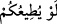
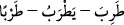
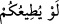

cümledir. Mânâ şöyle olur: Rasûlullah (s.a.) sizin değiştirmeniz gereken bir durumda
sizinle beraber olduğunda ya da sizin değiştirmeniz gereken durumda sizinle beraber
olduğunda… Değiştirilmesi gereken durum ise şudur: Pek çok hâdisede Efendimiz
(s.a.)’in sizin görüşünüze tâbî olmasını istiyorsunuz. Eğer bunu yapsaydı, sıkıntı ve
helâke düşerdiniz. Buna göre (
...) ifadesi bu halin değişmesinin gerekliliğinin
delilidir, hâl makamına kâim olmuştur. Buradan şu da anlaşılmaktadır ki; bazı kimseler
Rasûlullah (s.a.)’e Velîd’in sözünü tasdîk edip Mustalikoğullarına saldırması görüşünü
tavsiye etmişler; Efendimiz (s.a.) ise bunu kabul etmemiştir.
() kelimesi fesat, günah, helak ve meşekkate girmeye sebebiyet veren şeydir.
Kâmûs’ta şöyle der: Müfredât’ta geçtiği üzere bir kimse telefe yol açabilecek bir
duruma düştüğünde () denir.
() gibi dördüncü bâbdandır. Zemahşerî der ki: () bir kırığın
iyileşmesinden sonra tekrar kırılmasıdır. Nitekim Tâcü’l-mesâdır’da: “Günahkâr
olmak, içinden çıkamayacağı bir işe girişmek, zorlama sonrasında kemiklerin
kırılması…” gibi anlamlara geldiği ifade edilir.
“Bu içinizden günâha düşmekten korkanlar içindir” (Nisa 4/25) âyet-i
kerîmesindeki () kelimesi ise fücûr ve zinâ demektir. Bu bâbdan olarak
Müslümanlardan dâru’l-harbde bulunan bir esir, kendisi hakkında zina ve fücurdan
korkarsa onlardan bir kadınla evlenmesinde bir beis yoktur. Buradaki terkib bir
meşakkate delalet eder. () ifadesindeki muzârî sigası, onların sıkıntıya
düşmelerinin Hz. Peygamber (s.a.)’e itaate devam etmemelerinden kaynaklandığını
gösterir. Çünkü sıkıntıya düşmek onların akıllarına gelen her hususta Efendimiz (s.a.)’in
onlara itaat etmesinden kaynaklanır. Şöyle ki, bu durumda yöneticilik zarar görmekte ve
baş ayak ayak da baş olmaktadır. Yoksa nâdiren onların uygun gördüğü şeylere itâati
kast olunmamaktadır. Bilakis böyle bir şeyde herhangi bir beis olmaksızın onların
kalplerinin fethi söz konusudur.
Belâgat ilminde şöyle geçer: () mâzîdeki şart içindir. Yani, cezâdaki mânânın
gerçekleşmesini, şarttaki mânânın gerçekleşme varsayımına bağlar, bununla beraber de
şartın kat’î olarak gerçekleşmediğini ifâde eder. Buna göre cezâ da gerçekleşmez;
dolayısıyla da cezâ cümlesinde şu anda ve de mâzîde var oluş söz konusu olmaz. Çünkü
bu var oluş aradaki bu bağa aykırıdır, yani “… olsaydı …olurdu” şeklinde bir bağ varsa
oluş söz konusu değildir. Yine istikbâl de mâzîye münâfîdir. Bu edattan sonra gelen şart
ve cezâ cümlelerinde mâzî fiilden ancak bir nükte için vazgeçilebilir. ()
misâlinde olduğu gibi muzârî fiil gelmesi, fiilin geçmişte belirli zamanlarda devam
ettiğini göstermek maksadıyladır. Fiil itaattir; yani sıkıntıya düşmeniz, itâatinize devam
etmeyişinizdendir. Muzârî istimrar ifade ettiği gibi başına ()’in gelmesi de istimrârın
devam etmeyişini gösterir.
“Fakat” denilerek hitap bir takım kimselerden başkalarına çevrilmiştir. Bununla da
onların öncekilerin vasıflarından berî oldukları beyan edilmiş, yapmış oldukları işler